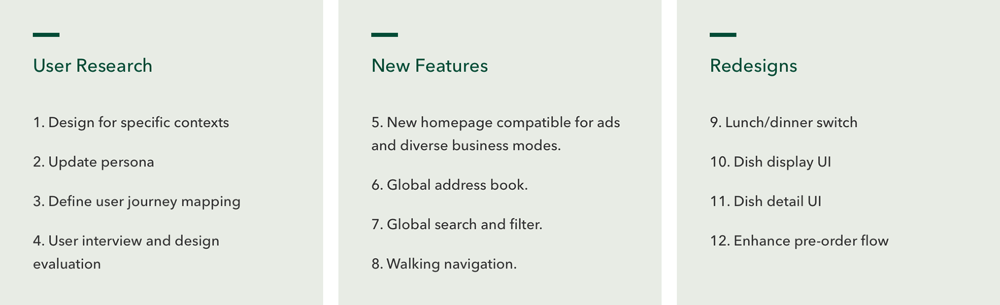
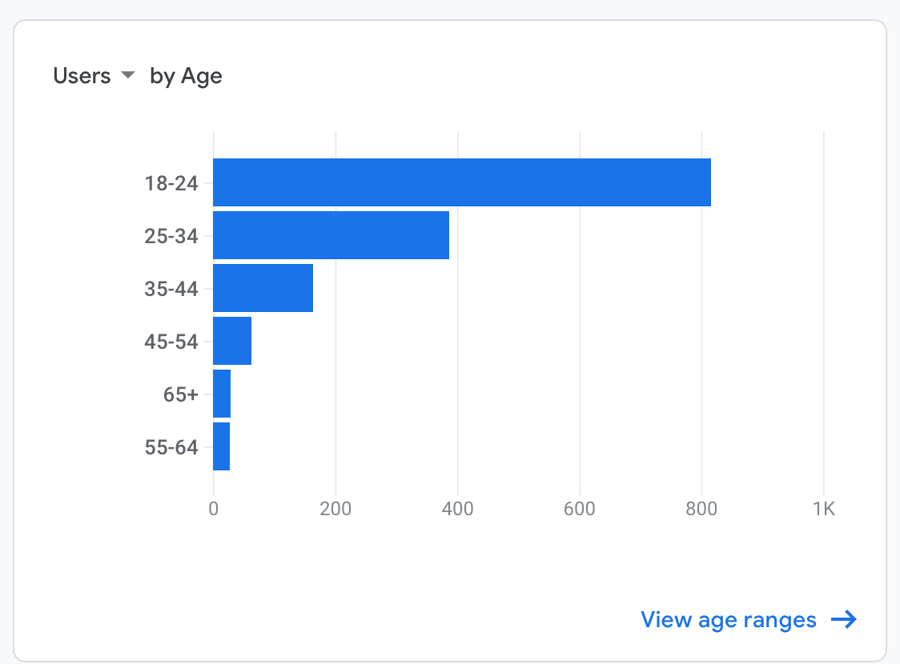
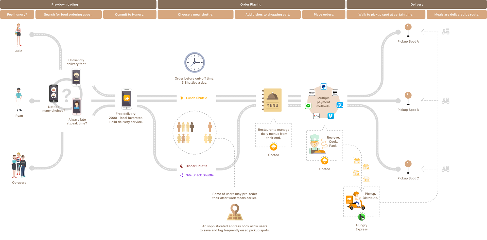
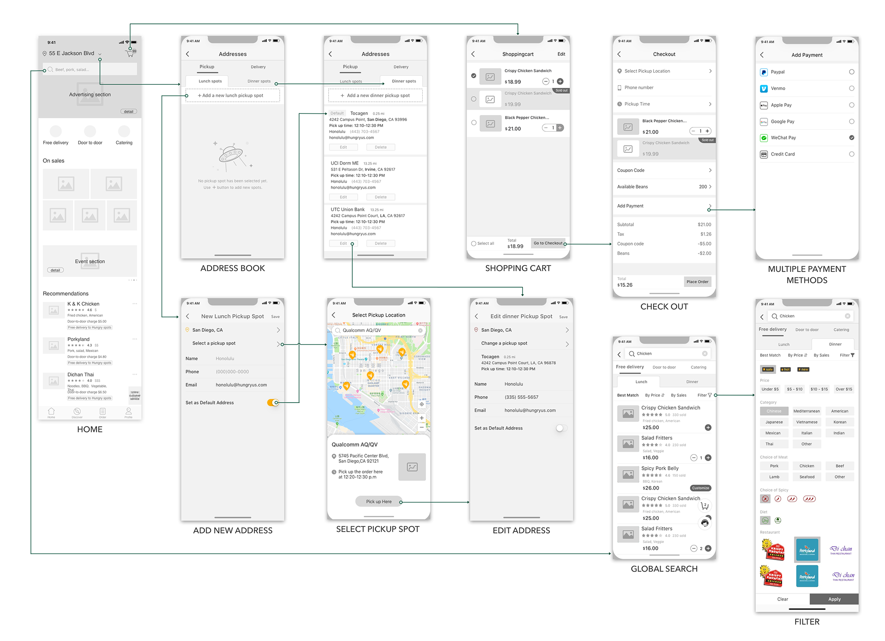

Hungry allows customers order from multiple restaurants
and enjoy free delivery.
Unlike most food delivery apps, Hungry specializes in FREE DELIVERY. Users from the same region are considered as one group, selecting designated pickup locations when ordering. Meals are delivered three times daily via shuttle buses operating on fixed schedules. To enjoy free delivery, users pick up their orders at these pickup spots, aka "the meal bus stops".
Currently serving San Diego, LA, and Irvine, Hungry is expanding to new cities due to strong demand. Additional services like catering and door-to-door delivery options are under consideration.

Hungry's honeycomb business mode.
My Role
- • Redesign all major interactions, user flows, copywriting, branding and visual deliverables.
- • Solve the pain point of customers struggling to locate dishes across different restaurants.
- • Work alongside 3 junior UX designers, who focused on register/checkout/edit profile flow.
Focus
User Research
Design For Specific Contexts (Use Cases)
To save time and boil down to the guided, empathic personas, choosing the right users to interview is the most vital foundation. We use Firebase to track the current traffic:
- Ages 18-24: Mostly college students
- Ages 25-34: Mostly young professionals (single)
- Ages 35-44: Higher purchasing power
- Ages 55+: Prefer simple/quick interactions
All of the above conclusions are based on preliminary assumptions and common stereotypes. To refine our personas and use cases, we’ll need to conduct user interviews for validation.
On a personal note, I interviewed: 2 college students (ages 18 and 19), and 2 office workers (aged 30-40 working in downtown areas).

Pain Points
Based on user interviews and persona analysis, we’ve identified key improvements for the new version:
- • Highlight FREE DELIVERY and streamline the preorder process to minimize new user friction.
- • Introduce late-night snack options to align with young users’ lifestyles.
- • Implement a backup service for users missed preorder windows, offering precise delivery for a nominal fee.
I map out the user journey to show where these enhancements locate:
The corresponding Restaurant App and Driver App interfaces are detailed in their respective pages.
Restructure product architecture for flow optimization and feature expansion:

Key Updates for New Release:
-
• Homepage Redesign
- ◦ Refreshed UI/UX
-
• Enhanced Address Book
- ◦ Pinned to top navigation
- ◦ Cross-city switching capability
-
• New Global Search & Filter
- ◦ Cross-category functionality
-
• Multi-Access Integration
- ◦ Unified multiple login portals
- ◦ Expanded multiple payment options
Simplifying Complex Interactions
When backend logic became intricate, I visualized the system through user flowchart, and facilitate technical discussions.
Featured Workflow:
- Pick up orders from service points across different cities
- • Cross-city switching capability
- • Carrier handoff protocols

Wireframe and Prototype
Redesigns
Enhance pre-order flow:
- Meal Delivery Service Overview:
- • Two daily meal bus shuttles;
- • Lunch shuttle: For pre-ordered lunches;
- • Dinner shuttle: For pre-ordered dinners;
- • Exclusive Modes: Lunch and dinner menus/prices differ, and only one mode is active at a time;
- • Once the order cutoff time has passed, dishes become unavailable until the next session begins.
- Order Cutoff Times:
- • Lunch: 2 PM (previous day) – 10:45 AM (delivery day)
- • Dinner: 8 PM (previous day) – 4:45 PM (delivery day)
- Old Version Pain Points:
- • The lunch/dinner toggle was buried in a sidebar, with lunch mode as the default. This caused user confusion:
- "Why are dishes unavailable when I open the app?"
- "Why can’t I order anytime?"
- "Why is the menu so limited?"
- "Wait—there’s a dinner mode? Where is it?"
Solutions:
- • Behavior-Driven Default Mode Switching
- ◦ 10:45 AM – 4:45 PM: most users need to order dinner, default to dinner mode;
- ◦ All other hours: Default to lunch homepage
- • Countdown Timer Implementation
- ◦ Only appears within 30 minutes of cutoff times;
- ◦ Locates in footer (non-intrusive but noticeable)
Final Deliverables

Usability Testing & Iterate On
- • Tech-savvy smartphone users
- • Proficient mobile food ordering users
- • Demographic alignment with our personas
Conducted in-depth interviews with 5 target users:
- • Usability analysis reports identifying key pain points, accompanied by improvement proposals
- • Implementation Example: How we refined the business framework based on user insights：
Outcome:
- It's tempting to keep adding features, but clean designs help users focus on what matters. The app is implemented tracking snippets to key homepage elements.
- The data that convinced me to trim underused features. After get users' feedback, the right-side interface shows our homepage improvements.
Data-Driven Design Decisions (via Firebase)

What I learned
Understanding user behavior proved far more challenging than I anticipated. Watching people struggle with our app - both in tests and through Firebase analytics - revealed surprising usage patterns that defied my expectations. Their difficulty finding what I considered "obvious" paths initially left me frustrated.
- It taught me a valuable lesson about the UX design process:
- • Engage users early and consistently – Invest more time observing, listening to, and understanding users' thought processes from the beginning of the design process.
- • Shift from intuition to evidence-based design – As product designers, our role is to gather, and interpretreal user needs into solutions that actually work for them.